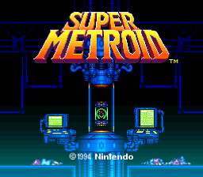
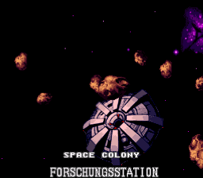
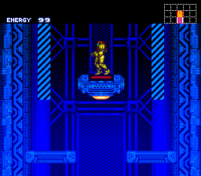
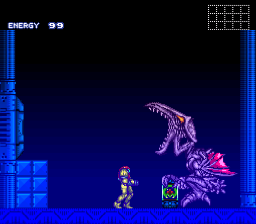

Super Metroid[a][b] is a 1994 action-adventure game developed by Nintendo and Intelligent Systems and published by Nintendo for the Super Nintendo Entertainment System (SNES). It is the third Metroid game, following the Game Boy game Metroid II: Return of Samus (1991). The player controls bounty hunter Samus Aran, who travels to the planet Zebes to retrieve an infant Metroid creature stolen by the Space Pirate leader Ridley.
Following the established gameplay model of its predecessors, Super Metroid focuses on exploration, with the player searching for power-ups used to reach previously inaccessible areas. It introduced elements such as the inventory screen, an automap, and the ability to fire in 8 directions. The development staff from previous Metroid games—including Yoshio Sakamoto, Makoto Kano and Gunpei Yokoi—returned to develop Super Metroid over the course of two years. The developers wanted to make a true action game, and set the stage for Samus' reappearance.
Platformer, Exploration, Metroidvania




SNES console
None